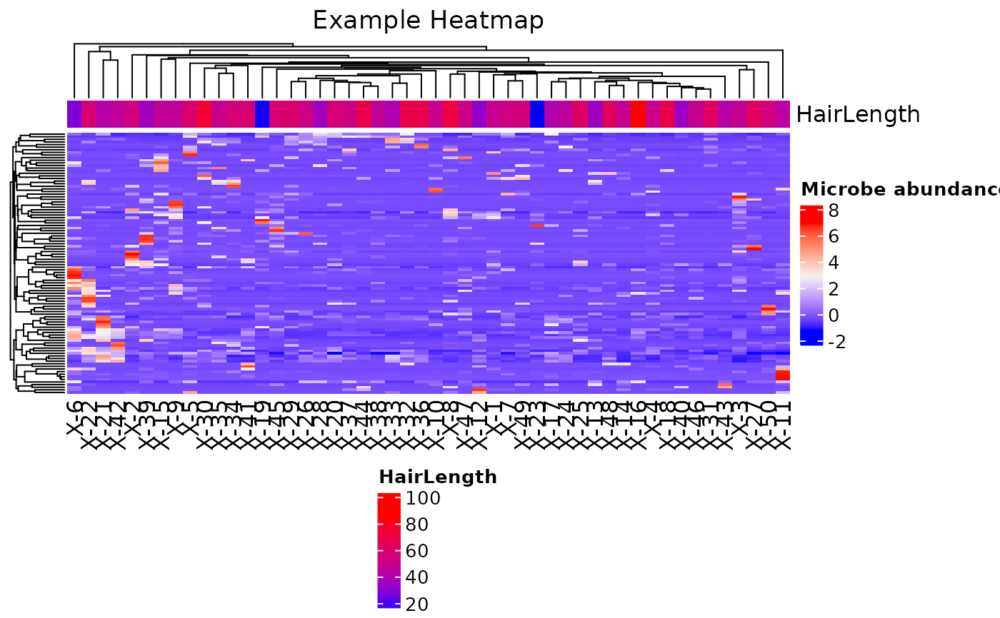

This function takes an arbitrary dataset as an input and returns a
ComplexHeatmap plot of samples based on similarity of microbial
abundances. The function takes arguments listed here as well
as any others to be passed on to ComplexHeatmap::Heatmap(). Note, the
"circlize" and "ComplexHeatmap" packages are required to use this function.
Usage
plot_heatmap(
inputData,
annotationData = NULL,
plot_title = NULL,
name = "Input data",
plottingColNames,
annotationColNames = NULL,
colList = list(),
scale = FALSE,
showColumnNames = TRUE,
showRowNames = TRUE,
colorSets = c("Set1", "Set2", "Set3", "Pastel1", "Pastel2", "Accent", "Dark2",
"Paired"),
choose_color = c("blue", "gray95", "red"),
split_heatmap = "none",
annotationplotting = NULL,
column_order = NULL,
...
)Arguments
- inputData
an input data object. It should either be of the class
SummarizedExperimentand contain the data and annotation data as columns in the colData, or alternatively be of the classesdata.frameormatrixand contain only the plotting data. Required.- annotationData
a
data.frameormatrixof annotation data, with one column. Only required ifinputDatais adata.frameormatrixof plotting data. The row names must equal those of theinputDatacolumn names. Default isNULL.- plot_title
a character string with the plot title of the heatmap. The default is
NULL.- name
a character string with the name of the data to be displayed. Default is
"Input data".- plottingColNames
a vector of the column names in
colDatathat contain the plotting data. Only required ifinputDatais a SummarizedExperiment object.- annotationColNames
a vector of the column names in
colDatathat contain the annotation data. Only required ifinputDatais aSummarizedExperiment. Default isNULL.- colList
a named
listof named vectors specifying custom color information to pass toComplexHeatmap::Heatmap(). The list should have as many elements as there are annotation columns, and each element name should correspond exactly with the name of each annotation column. The colors in the vector elements should be named according to the levels of the factor in that column's annotation data if the annotation is discrete, or it should be produced withcirclize::colorRamp2if the annotation is continuous. By default,ColorBrewercolor sets will be used. See the the parametercolorSetsfor additional details.- scale
logical. Setting
scale = TRUEscales the plotting data. The default isFALSE.- showColumnNames
logical. Setting
showColumnNames = TRUEwill show the column names (i.e. sample names) on the heatmap. The default isTRUE.- showRowNames
logical. Setting
showColumnNames = TRUEwill show the row names (i.e. plotting names) on the heatmap. The default isTRUE.- colorSets
a vector of names listing the color sets in the order that they should be used in creating the heatmap. By default, this function will use the color sets in the order listed in
Usagefor annotation information. You may replace the default with the same collection of sets in order that you want to use them, or provide custom color sets with thecolListparameter.- choose_color
a vector of color names to be interpolated for the heatmap gradient, or a
colorRampfunction produced bycirclize::colorRamp2. The default isc("blue", "gray95", "red").- split_heatmap
a character string either giving the column title of
annotationplottingcontaining annotation data for which to split the heatmap rows, or"none"if no split is desired.- annotationplotting
a
data.frameormatrixwith information to be used in splitting the heatmap. The first column should plotting names. The column of annotation information should be specified insplit_heatmap.Other columns will be ignored. The default issigAnnotData.- column_order
a vector of character strings indicating the order in which to manually arrange the heatmap columns. Default is
NULL, such that column order is automatically determined via clustering.- ...
Additional arguments to be passed to
ComplexHeatmap::Heatmap().
Details
If both annotationData = NULL and annotationColNames = NULL,
no annotation bar will be drawn on the heatmap.
Code was adapted from the TBSignatureprofiler R package.
Examples
library(SummarizedExperiment)
#> Loading required package: MatrixGenerics
#> Loading required package: matrixStats
#>
#> Attaching package: ‘MatrixGenerics’
#> The following objects are masked from ‘package:matrixStats’:
#>
#> colAlls, colAnyNAs, colAnys, colAvgsPerRowSet, colCollapse,
#> colCounts, colCummaxs, colCummins, colCumprods, colCumsums,
#> colDiffs, colIQRDiffs, colIQRs, colLogSumExps, colMadDiffs,
#> colMads, colMaxs, colMeans2, colMedians, colMins, colOrderStats,
#> colProds, colQuantiles, colRanges, colRanks, colSdDiffs, colSds,
#> colSums2, colTabulates, colVarDiffs, colVars, colWeightedMads,
#> colWeightedMeans, colWeightedMedians, colWeightedSds,
#> colWeightedVars, rowAlls, rowAnyNAs, rowAnys, rowAvgsPerColSet,
#> rowCollapse, rowCounts, rowCummaxs, rowCummins, rowCumprods,
#> rowCumsums, rowDiffs, rowIQRDiffs, rowIQRs, rowLogSumExps,
#> rowMadDiffs, rowMads, rowMaxs, rowMeans2, rowMedians, rowMins,
#> rowOrderStats, rowProds, rowQuantiles, rowRanges, rowRanks,
#> rowSdDiffs, rowSds, rowSums2, rowTabulates, rowVarDiffs, rowVars,
#> rowWeightedMads, rowWeightedMeans, rowWeightedMedians,
#> rowWeightedSds, rowWeightedVars
#> Loading required package: GenomicRanges
#> Loading required package: stats4
#> Loading required package: BiocGenerics
#>
#> Attaching package: ‘BiocGenerics’
#> The following objects are masked from ‘package:stats’:
#>
#> IQR, mad, sd, var, xtabs
#> The following objects are masked from ‘package:base’:
#>
#> Filter, Find, Map, Position, Reduce, anyDuplicated, aperm, append,
#> as.data.frame, basename, cbind, colnames, dirname, do.call,
#> duplicated, eval, evalq, get, grep, grepl, intersect, is.unsorted,
#> lapply, mapply, match, mget, order, paste, pmax, pmax.int, pmin,
#> pmin.int, rank, rbind, rownames, sapply, setdiff, table, tapply,
#> union, unique, unsplit, which.max, which.min
#> Loading required package: S4Vectors
#>
#> Attaching package: ‘S4Vectors’
#> The following object is masked from ‘package:utils’:
#>
#> findMatches
#> The following objects are masked from ‘package:base’:
#>
#> I, expand.grid, unname
#> Loading required package: IRanges
#> Loading required package: GenomeInfoDb
#> Loading required package: Biobase
#> Welcome to Bioconductor
#>
#> Vignettes contain introductory material; view with
#> 'browseVignettes()'. To cite Bioconductor, see
#> 'citation("Biobase")', and for packages 'citation("pkgname")'.
#>
#> Attaching package: ‘Biobase’
#> The following object is masked from ‘package:MatrixGenerics’:
#>
#> rowMedians
#> The following objects are masked from ‘package:matrixStats’:
#>
#> anyMissing, rowMedians
# Example with a Summarized Experiment data object
dat <- system.file("extdata/MAE_small.RDS", package = "LegATo") |> readRDS()
input_SE <- dat[["MicrobeGenetics"]]
## Creating a continuous color ramp annot col list
Hairrange <- range(colData(input_SE)[, "HairLength"])
color2 <- circlize::colorRamp2(c(Hairrange[1], Hairrange[2]), c("blue", "red"))
color.list <- list("HairLength" = color2)
## Create plot
plot_heatmap(
inputData = input_SE,
name = "Microbe abundances",
plot_title = "Example Heatmap",
plottingColNames = colnames(input_SE),
annotationColNames = "HairLength",
colList = color.list,
scale = TRUE,
showColumnNames = TRUE,
showRowNames = FALSE,
colorSets =
c("Set1", "Set2", "Set3", "Pastel1", "Pastel2", "Accent", "Dark2",
"Paired"),
choose_color = c("blue", "gray95", "red"),
split_heatmap = "none",
column_order = NULL
)

#> NULL
# Artificial data example - matrix input
mat_testdata <- rbind(matrix(c(rnorm(80), rnorm(80) + 5), 16, 10,
dimnames = list(paste0("Taxon", seq_len(16)),
paste0("sample", seq_len(10)))),
matrix(rnorm(1000), 100, 10,
dimnames = list(paste0("Taxon0", seq_len(100)),
paste0("sample", seq_len(10)))))
cov_mat <- data.frame(sample = c(rep("down", 5), rep("up", 5))) |>
magrittr::set_rownames(paste0("sample", seq_len(10)))
# Example using custom colors for the annotation information
color2 <- stats::setNames(c("purple", "black"), c("down", "up"))
color.list <- list("sample" = color2)
plot_heatmap(
inputData = mat_testdata,
annotationData = cov_mat,
name = "Data",
plot_title = "Example",
plottingColNames = NULL,
annotationColNames = NULL,
colList = color.list,
scale = FALSE,
showColumnNames = TRUE,
showRowNames = FALSE,
colorSets = c("Set1", "Set2", "Set3", "Pastel1", "Pastel2", "Accent", "Dark2",
"Paired"),
choose_color = c("blue", "gray95", "red"),
split_heatmap = "none",
column_order = NULL
)
#> NULL